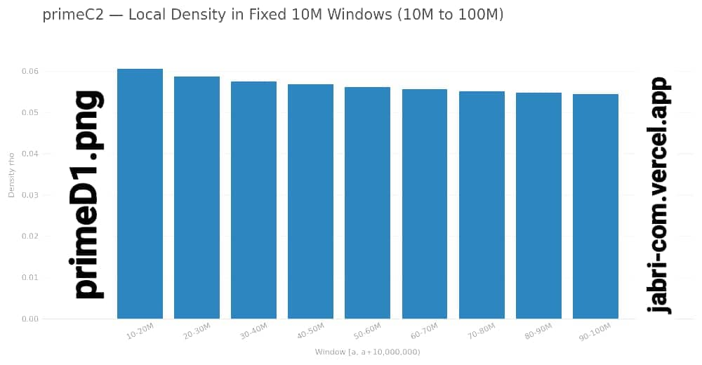

تعريف القياس الثابت — عبر A و B و C و D
S(x) = π(x) | Li₂(x) = ∫₂ˣ dt/ln t | D₁ = π − Li₂ | D₂ = π − x/ln x
ρ(a,b) = (π(b)−π(a))/(b−a) | ḡ = 1/ρ | R = |D₁|/π | ΔD₁ = D₁(x₂)−D₁(x₁)
العدّ: غربال إراتوستينس (مجزأ في D). الفجوات: بين أوليين متتاليين ≤ x فقط. النوافذ في D: ثابتة العرض 100,000,000 - تسع نوافذ.
1. جدول D النهائي
| x | π(x) | Li₂(x) | D₁ | R | D₂ |
|---|
| 100M | 5,761,455 | 5,762,208.330 | -753.330 | 0.0131% | +332,774.0 |
| 200M | 11,078,937 | 11,079,973.808 | -1,036.808 | 0.0094% | +615,308.2 |
| 300M | 16,252,325 | 16,253,408.102 | -1,083.102 | 0.0067% | +882,915.9 |
| 400M | 21,336,326 | 21,337,376.967 | -1,050.967 | 0.0049% | +1,141,420.0 |
| 500M | 26,355,867 | 26,356,831.104 | -964.104 | 0.0037% | +1,393,458.7 |
| 600M | 31,324,703 | 31,326,044.207 | -1,341.207 | 0.0043% | +1,640,014.1 |
| 700M | 36,252,931 | 36,254,240.999 | -1,309.999 | 0.0036% | +1,882,917.7 |
| 800M | 41,146,179 | 41,147,861.188 | -1,682.188 | 0.0041% | +2,122,021.5 |
| 900M | 46,009,215 | 46,011,647.589 | -2,432.589 | 0.0053% | +2,357,836.0 |
| 1,000M | 50,847,534 | 50,849,233.913 | -1,699.913 | 0.0033% | +2,592,591.6 |

D₁ سالب في كل النقاط، لكنه ليس مساراً هابطاً منتظماً - يتذبذب، وأكبر عودة نحو الصفر هي الأخيرة: +732.676.
2. ΔD₁ - التذبذب مثبت
| الفترة | ΔD₁ |
|---|
| 100M → 200M | -283.478 |
| 200M → 300M | -46.294 |
| 300M → 400M | +32.135 |
| 400M → 500M | +86.863 |
| 500M → 600M | -377.103 |
| 600M → 700M | +31.208 |
| 700M → 800M | -372.189 |
| 800M → 900M | -750.401 |
| 900M → 1,000M | +732.676 |
3. الكثافة - نوافذ 100 مليون
| النافذة | عدد الأوليات | ρ | ḡ |
|---|
| 100M-200M | 5,316,482 | 0.05316 | 18.81 |
| 200M-300M | 5,173,388 | 0.05173 | 19.33 |
| 300M-400M | 5,084,001 | 0.05084 | 19.67 |
| 400M-500M | 5,019,541 | 0.05020 | 19.92 |
| 500M-600M | 4,968,836 | 0.04969 | 20.13 |
| 600M-700M | 4,928,228 | 0.04928 | 20.29 |
| 700M-800M | 4,893,248 | 0.04893 | 20.44 |
| 800M-900M | 4,863,036 | 0.04863 | 20.56 |
| 900M-1,000M | 4,838,319 | 0.04838 | 20.67 |

الكثافة تنخفض باستمرار، والانخفاض يتباطأ.
4. الفجوات
| الفجوة | التكرار التراكمي حتى 10⁹ |
|---|
| 6 | 6,089,791 |
| 12 | 4,468,957 |
| 10 | 3,484,767 |
| 4 | 3,424,679 |
| 2 | 3,424,506 |
| 18 | 3,351,032 |

أكبر فجوة: 282 - بين 436,273,009 و 436,273,291، في نافذة 400M-500M. متوسط الفجوة الكلي: 19.67.
تغيّر رصدي: 10 صعدت إلى الثالثة. 2 و 4 متساويتان تقريباً - فرق 173 فقط.
5. مقارنة A → B → C → D
| المرحلة | نقطة الإغلاق | π(x) | D₁ | R | ترتيب الفجوات | أكبر فجوة |
|---|
| A | 10⁶ | 78,498 | -128.504 | 0.1637% | 6، 2، 4، 12 | 114 |
| B | 10⁷ | 664,579 | -338.360 | 0.0509% | 6، 12، 2، 4 | 154 |
| C | 10⁸ | 5,761,455 | -753.330 | 0.0131% | 6، 12، 2، 4 | 220 |
| D | 10⁹ | 50,847,534 | -1,699.913 | 0.0033% | 6، 12، 10، 4، 2، 18 | 282 |
6. ما الذي ثبت، وما الذي لم يثبت
ثبت حسابياً: الكثافة تنخفض بتباطؤ مستمر. D₁ سالب في كل النقاط الأربعين من 10⁵ حتى 10⁹. R يتقلص من 0.1637% إلى 0.0033% عند نقاط الإغلاق. ترتيب الفجوات تغيّر مرتين. أكبر فجوة تكبر: 114 ← 154 ← 220 ← 282.
لم يثبت: أي قانون لدورية التذبذب. أي تفسير لترتيب الفجوات. أي ادعاء أن D₁ سيبقى سالباً بعد المليار. أي استنتاج نظري يتجاوز ما قالته الأرقام.
ملاحظة التقريب: قيم Li₂ معروضة إلى ثلاثة أرقام عشرية. D₁ و R محسوبة من القيم الكاملة ثم مقرّبة للعرض. الفرق لا يتجاوز 0.001 في D₁.
سجل الإغلاق
PRIME — STAGE D CLOSED. النطاق: 10⁸ → 10⁹. العد النهائي: 50,847,534. المنهج: لم يتغير عن A و B و C. الحالة: مغلقة حسابياً، والجدول أعلاه هو المرجع الثابت.
من صنعاء بدأت الحكاية، لكن الذي أوصلها إلى المليار هو ثبات المسطرة. 🇾🇪✊🌹
prime-d.html — Stage D Final Closure · S(x)=π(x) · الصور في نفس المجلد: primeD1.png (D₁)، primeD2.png (الكثافة)، primeD3.png (الفجوات)